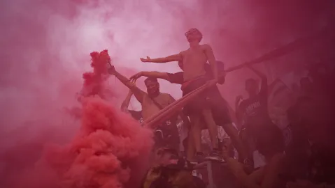
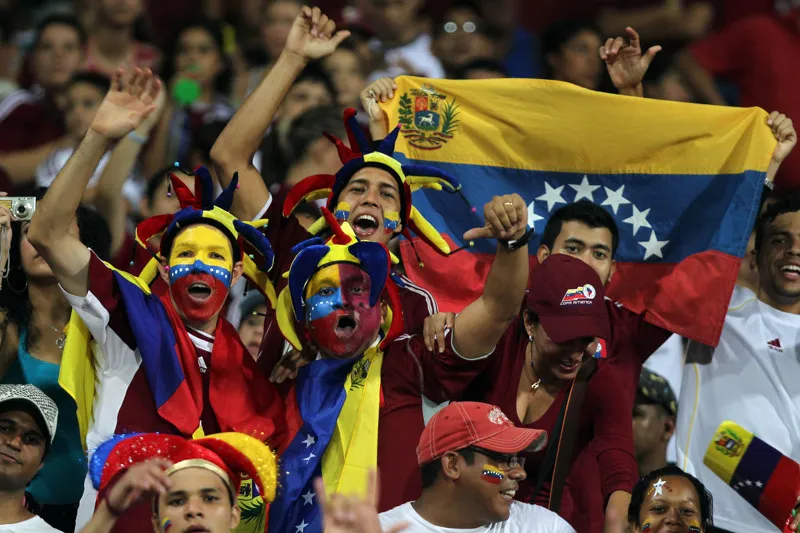
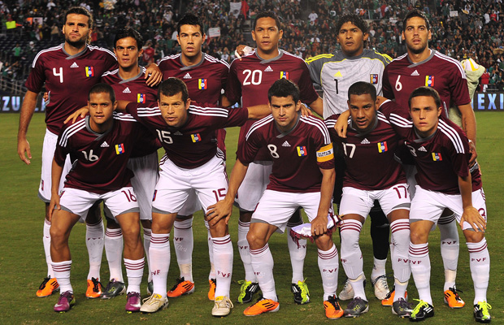

La Pelota No se Mancha: El Impacto Social del Fútbol Más Allá del Estadio

En Venezuela, la cancha es un mapa de identidad. Cuando el fútbol se enciende, no solo se enfrentan dos equipos; se encuentran dos geografías, dos culturas y, a menudo, dos formas de ver el país. El fanático del Deportivo Táchira siente el peso de los Andes en cada cántico; la "Avalancha Sur" del Caracas FC late con la velocidad y el caos de la capital. La camiseta no es solo un uniforme, es una bandera territorial que se iza con un fervor que pocos deportes logran replicar.
El fútbol venezolano, a pesar de las adversidades logísticas y de infraestructura, se sostiene sobre el "aguante" inquebrantable de sus seguidores. Esta fidelidad es lo que convierte a un estadio en un santuario popular.
Las barras organizadas son el corazón rítmico de esta cultura. Sus miembros no son solo espectadores; son los artesanos del folclore. Pasan la semana diseñando "trapos" (banderas), practicando ritmos con los tambores y adaptando la jerga del barrio a cánticos épicos que, por 90 minutos, resuenan con la potencia de un manifiesto social.
"La tribuna es donde se permite gritar, llorar y sentir sin filtros; es una válvula de escape social"
Durante décadas, la Vinotinto cargó con un sambenito histórico: la eterna "Cenicienta" de Suramérica. El fútbol era la sombra del béisbol, y las derrotas eran la norma. Pero en el inicio del milenio, algo cambió. Bajo el liderazgo de Richard Páez, llegó un mensaje que trascendió la táctica: "Creer es la primera palabra del triunfo".
No se trataba de clasificar al Mundial, sino de cambiar el chip nacional. Cuando la selección hiló victorias históricas, como el resonante triunfo 3-0 contra Chile en 2001, Venezuela se detuvo. Por primera vez, el país se paralizó ante un partido de fútbol, y el rugido de la celebración se sintió desde el Zulia hasta el Oriente. El fútbol dejó de ser una nota de relleno para convertirse en un asunto de Estado emocional, una fuente de unidad en un contexto de polarización social. El color vinotinto se tiñó de esperanza colectiva.
Ese cambio de mentalidad se consolidó en la Copa América 2011. La Vinotinto logró una gesta inédita, llegando hasta las semifinales del torneo. La magnitud del evento fue social: venezolanos de todas las clases y tendencias políticas se vistieron con el mismo color.
El equipo no solo jugaba por un resultado; se sentía que jugaba por la identidad. Las lágrimas de los jugadores eran las lágrimas de la nación. La Vinotinto se convirtió en un símbolo de lo que Venezuela podía lograr cuando trabajaba en equipo y con convicción. Esta gesta solidificó al fútbol en el corazón cultural del país. El legado de esta generación no son solo los puntos en la tabla, sino el hecho de que le enseñaron a un país a soñar unido bajo un mismo color. La pelota no se manchó; se llenó de la más pura pasión nacional.
En el fútbol venezolano, la camiseta es mucho más que tela: es un fragmento tangible de historia. En un país con una fuerte identidad visual en torno al deporte, el uniforme se ha convertido en un objeto de culto.
Para el venezolano, especialmente en la diáspora, la camiseta se convierte en una bandera portátil, un vehículo de memoria que conecta al portador con sus raíces y su identidad, haciendo del fútbol un pilar de la nostalgia y el orgullo patrio.
El deportista de élite, por su visibilidad, se convierte inevitablemente en un líder social. Aquí, tres voces venezolanas que utilizan su plataforma para impactar más allá del césped:
La pelota me dio una vida. Mi deber es darle una oportunidad a los que vienen de donde yo vengo, usando el fútbol como herramienta, no como fin.
Nuestro partido no es solo contra el rival. Es por la igualdad de condiciones, para que la niña de hoy sepa que el fútbol también es su futuro.
Ser capitán de la selección significa ser un espejo. Debemos demostrar con trabajo y compromiso que sí se pueden alcanzar los sueños, sin importar de dónde vienes
El verdadero impacto social del fútbol venezolano no se mide en la final de un torneo, sino en las canchas de tierra y cemento de los barrios. Allí, el fútbol es una escuela de vida.
Este deporte actúa como una poderosa herramienta de inclusión social. Fundaciones y academias comunitarias en todo el país (desde Catia hasta Barinas) utilizan la disciplina y el trabajo en equipo del fútbol para ofrecer una alternativa a la vulnerabilidad. En estas canchas, el valor de la camiseta no es económico, es formativo.
Hemos recorrido las historias, los gritos de la tribuna y los momentos épicos que demuestran que, en Venezuela, el fútbol es un espejo ineludible de nuestra sociedad. La pelota no se mancha porque, a pesar de los desafíos históricos y las adversidades económicas, ella sigue rodando, impulsada por la fe inquebrantable del venezolano.
El legado de la Vinotinto y la pasión de la Futve no residen solo en el marcador final, sino en la capacidad de este deporte para unir en el estadio lo que a veces se fragmenta fuera de él. El fútbol es la escuela de los valores en el barrio, el refugio de la memoria histórica y la bandera que se alza con orgullo en la diáspora.
La camiseta es nuestra, la historia es nuestra, y el compromiso de que siga siendo un motor social es de todos. Sigamos gritando, sigamos creyendo, y sigamos haciendo de esta pasión un verdadero impacto nacional.
Más allá del resultado, más fuerte que el silencio, más grande que la crisis. La pelota siempre rueda. Y en Venezuela, ella carga con la pasión, la historia y la esperanza de todo un país. Ella no se mancha. Ella nos une.